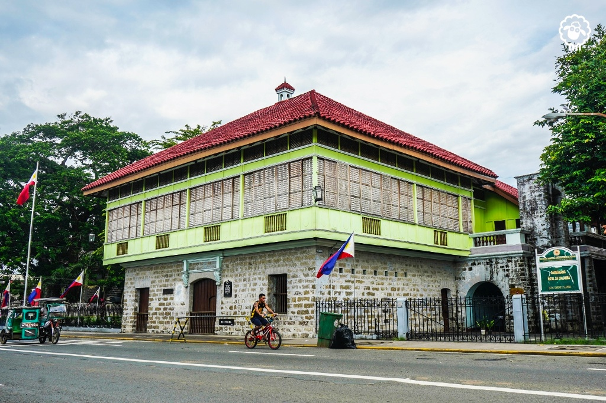

Introduction
José Protasio Rizal Mercado y Alonso Realonda was born on June 19, 1861, in Calamba, Laguna — the seventh of eleven children in a prosperous, deeply educated family. In thirty-five years he became a physician, novelist, poet, sculptor, linguist, and the moral center of a national awakening. He is recognized as the national hero of the Philippines.
This digital timeline examines a single question: what made Rizal who he was? Rather than treating his greatness as a given, it traces the two forces that shaped his character — the biological inheritance carried in his blood, and the environmental world that formed his mind. Together with the crucial episodes of his life, these reveal both his extraordinary strengths and his very human shortcomings, and how the obstacles he faced were transformed into acts of heroism.
A man's greatness is best measured by the forces that made him, and the choices he made against them.
Biological Factors
Inherited Traits
Rizal's lineage was remarkably mixed — Malay, Chinese, Spanish, and a distant Japanese strain. His paternal line descended from Domingo Lam-co, a Chinese immigrant from Fujian whose family cultivated industry, thrift, and a head for business. From his father, Francisco Mercado, Rizal inherited diligence, a calm temperament, and physical resilience.
From his mother, Teodora Alonso Realonda — one of the most educated women of her time — came his intellect, literary sensibility, and creative imagination. It was she who first taught him to read, write, and love poetry. This blend of a practical paternal line and a cultivated maternal one gave Rizal both discipline and brilliance.
Physical Characteristics
Rizal was small in stature — about five feet two inches — yet agile, energetic, and physically capable. He trained in fencing, marksmanship, and martial arts, refusing to let his slight frame limit him. His sharp memory and quick hands served equally well in surgery, sculpture, and language. His physical modesty became, in a sense, a metaphor for his life: greatness measured not in size but in will.

Industry & Calm
Discipline, business sense, physical endurance, and a steady temperament.
Intellect & Art
Literary talent, imagination, a love of learning, and moral seriousness.
Environmental Factors
If biology gave Rizal his raw gifts, his environment forged them into purpose. Three pressures shaped him: a loving but tested family, a rigorous education, and a colonial society rife with injustice.
A. Family Background & Upbringing
The Rizals were a principalía family — landed, comfortable, and devout. His elder brother Paciano became a second father and intellectual mentor, steering José toward higher studies and nationalist ideas. Yet the family also knew injustice: in 1872, his mother Teodora was wrongfully imprisoned on a fabricated charge. The sight of his innocent mother jailed planted in young Rizal an early, lasting awareness of colonial cruelty.
B. Educational Experiences
Rizal entered the Ateneo Municipal de Manila, graduating in 1877 with the highest honors, then studied medicine and philosophy at the University of Santo Tomas. Frustrated by discrimination against Filipino students, he sailed to Spain in 1882 and earned his licentiate in Medicine at the Universidad Central de Madrid, later specializing in ophthalmology in Germany — partly so he could one day cure his mother's failing eyesight.
C. Social & Political Context
Rizal came of age in a Philippines governed by Spain through the friar orders, where Filipinos were denied equality, voice, and justice. The 1872 execution of the priests Gomez, Burgos, and Zamora (GOMBURZA) scarred the national conscience and Rizal personally — he later dedicated El Filibusterismo to their memory. This atmosphere of abuse and inequality was the soil in which his reformist convictions grew.
Without a country, without a name — what is a man but an instrument of those who rule him?